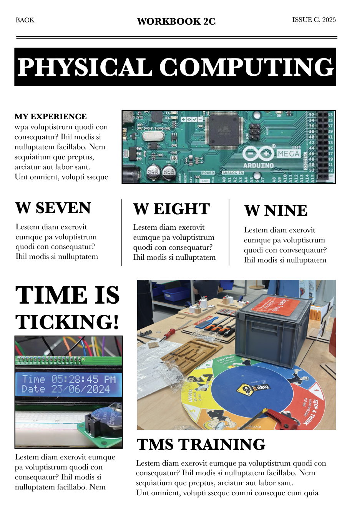

WORKBOOK 2C LANDING PAGE
Above: Designing Layout in Indesign
Before coding the layout in HTML and CSS, I first planned out my layout for the landing page in indesign.

Above: Landing Page Iteration
My first iteration of the landing page layout had alot I applied a paper effect to create more analog feel to the page. After implementing the first iteration and asking some of my friends to give some feedback, they pointed out how the font did not really give off the editorial newspaper I'm aiming for. Hence, I changed the font to IMBUE from google fonts and I reduced the black colour to a more toned and muted colour to give off that worn out effect.
Above: Landing Page Iteration
Here Continuing with analysing the first iteration and how to make the layouting better. I needed to improve on the gridding system as it was quite messy.
Above: Landing Page Iteration
Here I changed the font to "Playfair Display" from "Libre Baskerville". However I noticed how the font looks too big horizontally which does not match the newspaper look that is known for using fonts that are more vertically stretched. Therefore, I changed it again to "IMBUE" which is the final font that can be seen on the final landing page.